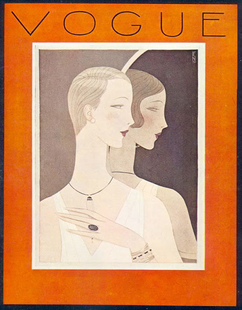
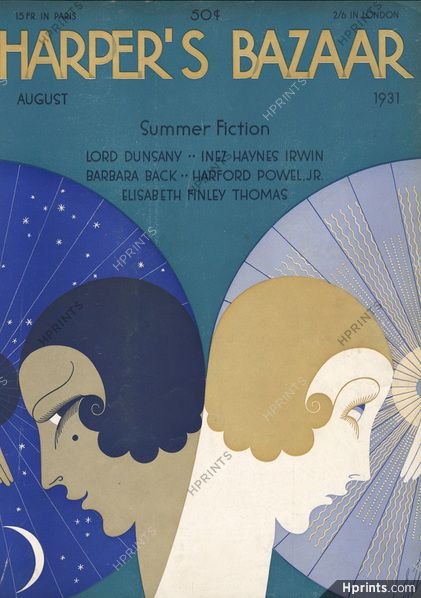
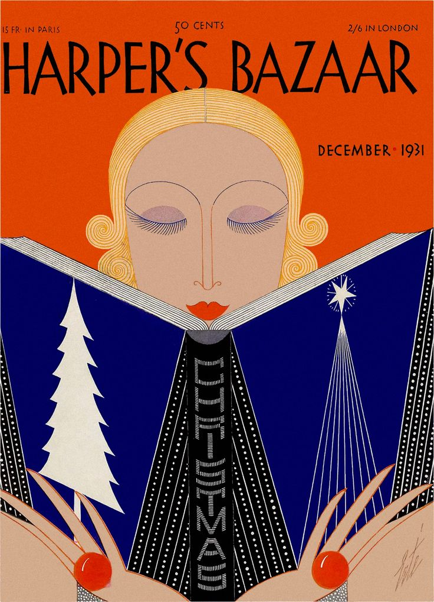
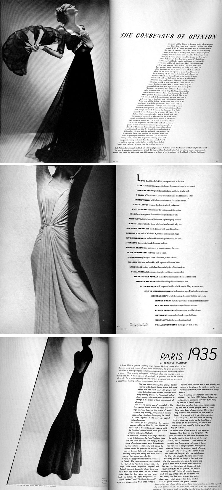
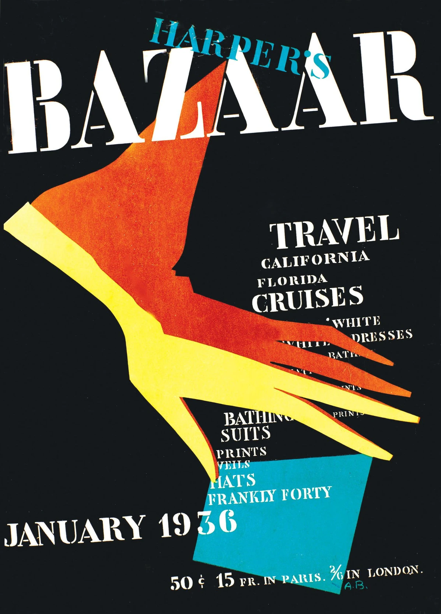
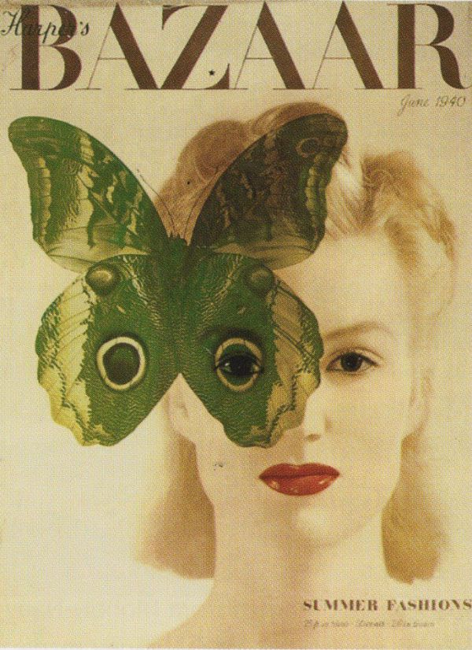
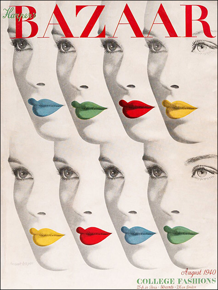
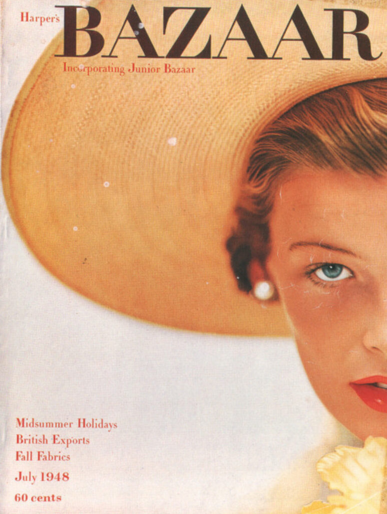
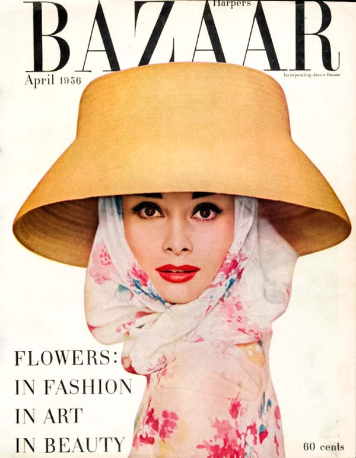

Era dorada de las revistas de moda
1930–1950
Las revistas de moda comenzaron a construir identidades visuales coherentes, sentando las bases de la dirección de arte moderna.
Puntos clave
- Las revistas pasaron de ser publicaciones informativas a convertirse en auténticas creadoras de tendencias y estilos de vida.
- La fotografía, el diseño editorial y los contenidos empezaron a responder a una estrategia visual unificada.
- La influencia del cine introdujo nuevas formas de narración visual basadas en personajes, escenarios y emociones.
- La alta costura reforzó la asociación entre moda, lujo y construcción de marca.
- Comenzaron a consolidarse los primeros equipos creativos especializados dentro de las publicaciones.
Referentes
- Vogue: se consolidó como una de las principales referencias internacionales en comunicación visual de moda, contribuyendo a definir tendencias, estilos de vida y modelos de consumo.
- Harper's Bazaar: destacó por su apuesta por la innovación visual y por impulsar nuevas formas de combinar fotografía, diseño y narrativa editorial.
- Alexey Brodovitch: director artístico de Harper's Bazaar y una de las figuras más influyentes de la historia de la dirección de arte.
Galería









